Recommended Books
All Books
- The Lean Startup by Eric Ries
-
 If you are familiar with Lean or Agile software development you have probably heard many of the concepts in this book. Eric Ries explains how to use the techniques of lean production including testing, feedback, and other key agile development enablers at the business and organizational level to innovate. The book emphasizes that the key to getting better at what you do is to have goals, test, measure, and use techniques like "5 Why's" to understand problems, This book will help you to understand understand that being lean is an organization-wide process. An enjoyable read, filled with stories from both Ries' consulting and startup experience and filled with references to sources for more information, this book can help you to understand how to innovate, whether you are working on a project of starting a company. Business people will learn more about lean engineering, engineers will learn how lean applies to the business. (These comments are based on an advanced review copy of the book)
If you are familiar with Lean or Agile software development you have probably heard many of the concepts in this book. Eric Ries explains how to use the techniques of lean production including testing, feedback, and other key agile development enablers at the business and organizational level to innovate. The book emphasizes that the key to getting better at what you do is to have goals, test, measure, and use techniques like "5 Why's" to understand problems, This book will help you to understand understand that being lean is an organization-wide process. An enjoyable read, filled with stories from both Ries' consulting and startup experience and filled with references to sources for more information, this book can help you to understand how to innovate, whether you are working on a project of starting a company. Business people will learn more about lean engineering, engineers will learn how lean applies to the business. (These comments are based on an advanced review copy of the book)
Related books - Better: A Surgeon's Notes on Performance by Atul Gawande
-
 While Gawande stays clearly in the domain of medicine, there are lessons in this book to be learned by those working in any craft that combines technology, personal skill, and human interaction. Better is a good read for anyone seeking to understand performance and how important the individual and collaboration are in a profession one often thinks of as the being dominated by individual practitioners with highly specialized skills. What was especially interesting to me was how this book brought to mind parallels with what seems to be a vastly different practice: Software development. The stories of practice in rural India seemed to make a case for the value of "generalizing specialists," the discussion of infection prevention was an echo of the value (and difficulty) of getting a team to be disciplined in using a few simple practices. Almost every chapter found me making notes about parallels to software development. I suspect those in other fields that require both individual skills, judgement, and collaboration might find the same thing. This wasn't unexpected, as I had first read The Checklist Manifesto, but that book was explicit about the parallels. If you are interested in health care, want to understand how to apply skills more effectively, or simply just like a good story, Better is good, Gawande mixes anecdote, data, and an almost suspenseful presentation style to make what could be an academic discussion approachable and entertaining. For a more detailed review see my blog
While Gawande stays clearly in the domain of medicine, there are lessons in this book to be learned by those working in any craft that combines technology, personal skill, and human interaction. Better is a good read for anyone seeking to understand performance and how important the individual and collaboration are in a profession one often thinks of as the being dominated by individual practitioners with highly specialized skills. What was especially interesting to me was how this book brought to mind parallels with what seems to be a vastly different practice: Software development. The stories of practice in rural India seemed to make a case for the value of "generalizing specialists," the discussion of infection prevention was an echo of the value (and difficulty) of getting a team to be disciplined in using a few simple practices. Almost every chapter found me making notes about parallels to software development. I suspect those in other fields that require both individual skills, judgement, and collaboration might find the same thing. This wasn't unexpected, as I had first read The Checklist Manifesto, but that book was explicit about the parallels. If you are interested in health care, want to understand how to apply skills more effectively, or simply just like a good story, Better is good, Gawande mixes anecdote, data, and an almost suspenseful presentation style to make what could be an academic discussion approachable and entertaining. For a more detailed review see my blog
Related books - Continuous Delivery: Reliable Software Releases through Build, Test, and Deployment Automation by Jez Humble and David Farley
-
 This book will help you to understand that the secret to quality software, reliably deployed, is to take a cross-functional approach. You will walk away from this book with an understanding of how to start implementing a continuous deployment pipeline, and you may also find yourself writing down a list of things to try, and tools to use. While not a tool-centric book, the authors provide many examples of tools to help you implement each phase of the process. Since no one book can cover every aspect of every step in the development process, the authors point you to many excellent resources if you want to learn more. While the authors have experience in, an a pre-disposition for, Agile techniques, the principles described in this book apply to any organization, whatever the process, though if you take the approach to heart, you will find yourself becoming more agile. This book covers every aspect of the development process from requirements, design, and coding, to acceptance testing, deployment and operations. While having a lot of material, the book is well organized and written. It's not a quick read, and you'll want to have a notebook or post-its handy to capture the idea it helps you to generate, but if you are interested in improving your deployment process you will find this book valuable, whether you are a developer, tester, release engineer, or someone who manages people in those roles.
This book will help you to understand that the secret to quality software, reliably deployed, is to take a cross-functional approach. You will walk away from this book with an understanding of how to start implementing a continuous deployment pipeline, and you may also find yourself writing down a list of things to try, and tools to use. While not a tool-centric book, the authors provide many examples of tools to help you implement each phase of the process. Since no one book can cover every aspect of every step in the development process, the authors point you to many excellent resources if you want to learn more. While the authors have experience in, an a pre-disposition for, Agile techniques, the principles described in this book apply to any organization, whatever the process, though if you take the approach to heart, you will find yourself becoming more agile. This book covers every aspect of the development process from requirements, design, and coding, to acceptance testing, deployment and operations. While having a lot of material, the book is well organized and written. It's not a quick read, and you'll want to have a notebook or post-its handy to capture the idea it helps you to generate, but if you are interested in improving your deployment process you will find this book valuable, whether you are a developer, tester, release engineer, or someone who manages people in those roles.
Related books - Lean Architecture: for Agile Software Development by James Coplien and Gertrud Bjørnvig
-
 When I received my review copy of this book, I had high expections. And I was not disappointed.
As a C++ programmer in the early 90's Coplien's Advanced C++ Programming Styles and Idioms was a source of interview material when looking for programmers. It's a good bet that this book may fill the same role for those looking to see if candidates for architect roles understand what it means to be an architect in a Lean or Agile Organization. This book dispels the myth that Agile and Architecture don't go together and explains the balance between Agile architecture and too much Big Up Front Design. This book emphasizes the importance of frequent collaboration between stakeholders in defining a good architecture and helps you to understand the importance of architecture to the success of agile projects. With code examples throughout, this book emphasizes that architecture and coding must go together. After describing some general principles of how architecture can add value to an agile project, the authors explain the Data Context, Interaction (DCI) architecture, which provides an framework for building lean architectures. My one minor complaint is that the transition between the general discussions of lean architecture and the focused discussion of DCI was a bit abrupt. But this was a minor distraction from an enjoyable and informative read. Rich with citations and historical context, this book will be useful for anyone who is struggling with how to build systems that need to support complicated user interactions.
When I received my review copy of this book, I had high expections. And I was not disappointed.
As a C++ programmer in the early 90's Coplien's Advanced C++ Programming Styles and Idioms was a source of interview material when looking for programmers. It's a good bet that this book may fill the same role for those looking to see if candidates for architect roles understand what it means to be an architect in a Lean or Agile Organization. This book dispels the myth that Agile and Architecture don't go together and explains the balance between Agile architecture and too much Big Up Front Design. This book emphasizes the importance of frequent collaboration between stakeholders in defining a good architecture and helps you to understand the importance of architecture to the success of agile projects. With code examples throughout, this book emphasizes that architecture and coding must go together. After describing some general principles of how architecture can add value to an agile project, the authors explain the Data Context, Interaction (DCI) architecture, which provides an framework for building lean architectures. My one minor complaint is that the transition between the general discussions of lean architecture and the focused discussion of DCI was a bit abrupt. But this was a minor distraction from an enjoyable and informative read. Rich with citations and historical context, this book will be useful for anyone who is struggling with how to build systems that need to support complicated user interactions.
Related books - Configuration Management Best Practices: Practical Methods that Work in the Real World by Bob Aiello and Leslie Sachs
-
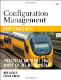When I reviewed an early draft of this book I was pleased to see a book on SCM that wasn't just about tools and processes (though it covers those things) but also about people. SCM is about enabling people to work together effectively, and tools and processes are essential, but you need to use them with an understanding of how people work. This book covers not just version control but the range of CM activities from build to deployment, even covering hardware CM issues. While anyone who works with software may benefit from this book, those who manage teams and project or are looking to improve their SCM processes will find the approach especially useful.
Related books - Drive: The Surprising Truth About What Motivates Us by Daniel Pink
-
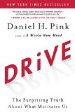This is one of those books that describes something extremely obvious and intuitive that at the same time goes against what you were taught was "common sense." This would be a good book just for the survey of the (long) history of the study of the theory of motivation. It also concludes with a number of things you can do to create an environment that encourages mastery (as opposed to simply meeting goals) in your work and school. As an agile software developer I had a few aha! moments when you understand how agile practices really encourage flow and create environments where teams and individuals can be highly productive. As a parent, this book re-enforced that the way children approach learning and problems is something to be viewed with awe. If you're a manager, this book will encourage you to think about how teams work and how some common practices are counter-productive. It's a quick read that will get you thinking and learning.
Related books - Measuring and Managing Performance in Organizations by Robert D. Austin
-
 If you thought that performance review processes and incentive systems are often flawed, but wanted to understand why, Austin's book will give you a model to understand dysfunctional measurement processes, and a path to understanding how to avoid the dysfunctions and really help organizations and teams perform in a way that improves quality and gives customers what they want. Though the core of this book is an economic model, the book is quite readable and enjoyable. While this book was written before many people had heard of agile or Scrum, the model in the book also helps you understand why the approach of self-organizing teams that agile methods advocate can be very effective. Many of the conclusions in this book seem like common sense, but like many things, common sense is not synonymous with common practice, especially among people want to measure things. If you manage people consider reading this book to get a deeper understanding about incentive systems in addition to Behind Closed Doors: Secrets of Great Management which will help you to learn how to effectively manage people day-to-day to improve performance
If you thought that performance review processes and incentive systems are often flawed, but wanted to understand why, Austin's book will give you a model to understand dysfunctional measurement processes, and a path to understanding how to avoid the dysfunctions and really help organizations and teams perform in a way that improves quality and gives customers what they want. Though the core of this book is an economic model, the book is quite readable and enjoyable. While this book was written before many people had heard of agile or Scrum, the model in the book also helps you understand why the approach of self-organizing teams that agile methods advocate can be very effective. Many of the conclusions in this book seem like common sense, but like many things, common sense is not synonymous with common practice, especially among people want to measure things. If you manage people consider reading this book to get a deeper understanding about incentive systems in addition to Behind Closed Doors: Secrets of Great Management which will help you to learn how to effectively manage people day-to-day to improve performance
Related books - Manage Your Project Portfolio: Increase Your Capacity and Finish More Projects by Johanna Rothman
-
 Portfolio management sounds neither compelling nor agile, yet in this book Johanna Rothman explains not only the importance of portfolio management, but also how portfolio management and agile development approaches enable each other. By a combination of guidelines, stories, and references Rothman teaches you how to define a mission, prioritize your product development plan, and enable your organization to get more done while reducing technical debt, and enhancing flexibility. This is an approachable and engaging book that will appeal to project managers, technical leads, and anyone interested in understanding how to develop and execute a consistent project strategy.
Portfolio management sounds neither compelling nor agile, yet in this book Johanna Rothman explains not only the importance of portfolio management, but also how portfolio management and agile development approaches enable each other. By a combination of guidelines, stories, and references Rothman teaches you how to define a mission, prioritize your product development plan, and enable your organization to get more done while reducing technical debt, and enhancing flexibility. This is an approachable and engaging book that will appeal to project managers, technical leads, and anyone interested in understanding how to develop and execute a consistent project strategy.
Related books - The Checklist Manifesto by Atul Gawande
-
 This is a book written by a surgeon, talking about how doctors, structural engineers, pilots and others use checklists to manage complexity and manage risk. While reading it, I kept thinking of all the things the scenarios he described has in common with software projects, and how the checklists reenforced the same values that agile software teams hold dear. Gawande illusrates how checklists help people be more creative, more productive and solve problems by allowing people to focus on the novel parts of a problem. What I especially liked was the recurring theme of how complex problems are best solved by teams and not heroic individuals, and how processes, like those guided by checklists can help foster teamwork. This is an easy to read book that helps you understand what all complex endeavors have in common, regardless of profession, and gives you one approach to managing this complexity. Read it if you want to understand how to write good checklists and use them effectively, and to address the negative perceptions colleagues have about processes and checklists.
This is a book written by a surgeon, talking about how doctors, structural engineers, pilots and others use checklists to manage complexity and manage risk. While reading it, I kept thinking of all the things the scenarios he described has in common with software projects, and how the checklists reenforced the same values that agile software teams hold dear. Gawande illusrates how checklists help people be more creative, more productive and solve problems by allowing people to focus on the novel parts of a problem. What I especially liked was the recurring theme of how complex problems are best solved by teams and not heroic individuals, and how processes, like those guided by checklists can help foster teamwork. This is an easy to read book that helps you understand what all complex endeavors have in common, regardless of profession, and gives you one approach to managing this complexity. Read it if you want to understand how to write good checklists and use them effectively, and to address the negative perceptions colleagues have about processes and checklists.
Related books - Getting Things Done by David Allen
-
 A simple approach for keeping of track of what you want to do, doing what's important, and ignoring what's not. While the concepts are simple, the book is worth a read to understand the execution.
A simple approach for keeping of track of what you want to do, doing what's important, and ignoring what's not. While the concepts are simple, the book is worth a read to understand the execution.
Related books - 97 Things Every Programmer Should Know by Edited by Kevlin Henney
-
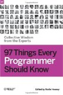I contributed to this project, which both by the content, and the process by which it came to be, provides evidence that software development is about collaboration. craftsmanship, and careful attention to detail. This book is a chance to learn from the experiences of people who've worked hard not just at writing good code, but at creating good software systems. Some of the advice may be things you already know. Some items may be surprising. Read this book to learn, be challenged, and to understand why programming isn't just about languages and syntax.
Related books - Adapting Configuration Management for Agile Teams: Balancing Sustainability and Speed by Mario E. Moreira
-
 This book is a good guide to both CM and Agile principles, and it demonstrates how to use software configuration management to enable your team to be more agile. This book can guide you to understanding how to manage releases in an agile environment, and how to apply basic CM concepts like build and branching successfully. While not a replacement for a book on your agile method, this book is a primer on agile for those with a traditional release management background, and and a primer on CM for those who understand agile. After reading it you will have enough background to be productive, and a good sense of what you need to learn more about. In addition, this book covers topics such as how to leverage cloud service providers for infrastructure, how to leverage SCM to make off-shore development less painful, and how to evolve your SCM process in an agile (incremental) fashion. With a good structure that allows you to navigate the book quickly, and a good use of metaphor to describe concepts, this book will help a release managers, project managers, developers and architects use the SCM process to get the most out of their agile teams. (I was a reviewer of the manuscript, this review is based on the final edition.)
This book is a good guide to both CM and Agile principles, and it demonstrates how to use software configuration management to enable your team to be more agile. This book can guide you to understanding how to manage releases in an agile environment, and how to apply basic CM concepts like build and branching successfully. While not a replacement for a book on your agile method, this book is a primer on agile for those with a traditional release management background, and and a primer on CM for those who understand agile. After reading it you will have enough background to be productive, and a good sense of what you need to learn more about. In addition, this book covers topics such as how to leverage cloud service providers for infrastructure, how to leverage SCM to make off-shore development less painful, and how to evolve your SCM process in an agile (incremental) fashion. With a good structure that allows you to navigate the book quickly, and a good use of metaphor to describe concepts, this book will help a release managers, project managers, developers and architects use the SCM process to get the most out of their agile teams. (I was a reviewer of the manuscript, this review is based on the final edition.)
Related books - Agile Retrospectives: Making Good Teams Great by Esther Derby and Diana Larsen
-
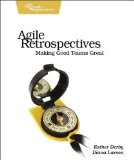Teams often think about how to improve because they don't think that they have the time. Agile Project Retrospectives gives you the information you need to plan for a short, effective retrospective. The book isn't a replacement for a book like [[ASIN:0932633447 Project Retrospectives: A Handbook for Team Reviews]], but it can give someone interested in running a retrospective a good understanding of the goals, a framework of how to structure the retrospective, and a menu of exercises to apply at each phase. This book isn't magic; an effective retrospective takes thought and planning. But this book gives you the tools you need to facilitate an efficient and effective retrospective. Every project manager, scrum master, and technical leader should have a copy of this book. You'll not only want to read it; you will refer to it often.
Related books - How To Talk To Anyone About Anything! by Jill Spiegel with Joe Brozic
-
 By stringing together anecdotes, exercises, and simple guidelines, Jill Speigel explains how to improve your communication style, and helps you learn how to address common problems like not knowing how to start a conversation, what to do when you forget a name, and how to deal with difficult people. Many of the points in the book seem simple and obvious, but they are also the things that we seem to forget most in our day to day interactions. Between the stories in the book, and Jill's writing style, it's hard not to put down the book feeling motivated and uplifted. You'll be able to read the book quickly, but will want to glance back at the sections that discuss issues that seem problematic. While there are other books that cover conversational style issues in more detail, you'll get a lot out of this quick read.
By stringing together anecdotes, exercises, and simple guidelines, Jill Speigel explains how to improve your communication style, and helps you learn how to address common problems like not knowing how to start a conversation, what to do when you forget a name, and how to deal with difficult people. Many of the points in the book seem simple and obvious, but they are also the things that we seem to forget most in our day to day interactions. Between the stories in the book, and Jill's writing style, it's hard not to put down the book feeling motivated and uplifted. You'll be able to read the book quickly, but will want to glance back at the sections that discuss issues that seem problematic. While there are other books that cover conversational style issues in more detail, you'll get a lot out of this quick read.
Related books- What Every Body is Saying: An Ex-FBI Agent's Guide to Speed-Reading People
- Getting to Yes : Negotiating Agreement Without Giving In
- Getting Past No : Negotiating Your Way from Confrontation to Cooperation
- Communication Gaps and How to Close Them
- Behind Closed Doors: Secrets of Great Management
- Slack: Getting Past Burnout, Busywork, and the Myth of Total Efficiency
- Adrenaline Junkies and Template Zombies: Understanding Patterns of Project Behavior by Tom Demarco, Peter Hruschka, Tim Lister, Suzanne Robertson, James Robertson, Steve McMenamin
-
 This book contains descriptions of 86 common organizational behaviors described in a concise and entertaining way, using stories, guidelines, and metaphor. This approach makes it easy for you to identify with similar situations in your present or past organizations, and remember them. Managers, developers, and students of organizational behavior will enjoy reading this book and want a copy around for reference. Those with more experience will find that the patterns resonate with them, and those newer to software development will get an idea of what to expect in team dynamics. Like may great books, you'll have learned much from the experience of the authors while being entertained and amused.
This book contains descriptions of 86 common organizational behaviors described in a concise and entertaining way, using stories, guidelines, and metaphor. This approach makes it easy for you to identify with similar situations in your present or past organizations, and remember them. Managers, developers, and students of organizational behavior will enjoy reading this book and want a copy around for reference. Those with more experience will find that the patterns resonate with them, and those newer to software development will get an idea of what to expect in team dynamics. Like may great books, you'll have learned much from the experience of the authors while being entertained and amused.
Related books - Behind Closed Doors: Secrets of Great Management by Johanna Rothman and Esther Derby
-
 This is an excellent work that guided me though my first formal management experience. The book weaves its lessons into a story which helped you to understand how to apply what you learned. Like many important books, it explains some simple rules that can be difficult to execute in practice. The downside of reading this book is that you may realized that you're not being managed well (or have not been in the past) and you can no longer live in blissful ignorance. All technical managers at all levels should have read a copy of this book. The section on having one on ones by itself is worth the price.
This is an excellent work that guided me though my first formal management experience. The book weaves its lessons into a story which helped you to understand how to apply what you learned. Like many important books, it explains some simple rules that can be difficult to execute in practice. The downside of reading this book is that you may realized that you're not being managed well (or have not been in the past) and you can no longer live in blissful ignorance. All technical managers at all levels should have read a copy of this book. The section on having one on ones by itself is worth the price.
Related books - Pragmatic Version Control using Git by Travis Swicegood
-
A concise, readable, introduction to Git, Distributed Version Control, and SCM Practices. The examples are simple to understand, and show you how to do useful work quickly. This book is an bridges the gap between tutorial and reference very well and should be useful to those new to SCM, as well as those comfortable with SCM concepts who want to learn more about Distributed version control systems and Git.
Related books - Pragmatic Thinking and Learning by Andy Hunt
-
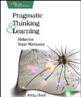A well written, entertaining, guide to tools and techniques to help you be a better engineer. While many of the examples are geared towards software developers, anyone who wants to learn how to use their time (and energy) more effectively will benefit from reading this book. This book is a great mix of background material to help you understand how you learn, resources to enable you to learn more, and techniques to help you practice right away. This book will be one I refer to often, and is a great companion to Getting Things Done, and Becoming a Technical Leader.
Related books - Effective Java (2nd Edition) by Joshua Bloch
-
As Java evolves and there are more ways to do things, it's getting more important to learn which idioms to use to benefit from library and language features. Effective Java is a well written book that will help new programmers learn how the right way to solve problems, and provide experienced programmers with a refresher course so that they can break out of bad habits, and make use of new library and language features. Read or skim the book from start to finish to get a sense of what's there, and keep it nearby when you are coding as a reference.
- Weinberg on Writing: The Fieldstone Method by Gerald M Weinberg
-
 This is an inspirational and practical book that will both help you be a better, more productive writer and make you want to write. Weinberg explains timeless techniques you can use to collect and organize your ideas effectively when you are writing about a topic you care about. Jerry Weinberg's books have had a positive influence on my life as a technologist and manager, and with this book, he is now inspiring me to be a better writer. If you are a writer, or want to be one, you will want to read this book once for inspiration, and refer to it again later for it's exercises and advice.
This is an inspirational and practical book that will both help you be a better, more productive writer and make you want to write. Weinberg explains timeless techniques you can use to collect and organize your ideas effectively when you are writing about a topic you care about. Jerry Weinberg's books have had a positive influence on my life as a technologist and manager, and with this book, he is now inspiring me to be a better writer. If you are a writer, or want to be one, you will want to read this book once for inspiration, and refer to it again later for it's exercises and advice.
- Practices of an Agile Developer: Working in the Real World by Venkat Subramaniam and Andy Hunt
-
 A Pragmatic, method agnostic, guide to the essential practices for an agile team. The book covers the whole lifecycle form planning to design and coding, showing you how to balance the agile dogma with practical considerations. The book also addresses common misconceptions about agile practices. People new to agile will benefit from the book, but those who have been working using an agile method will get a lot from a fresh look at why they are using agile practices.
A Pragmatic, method agnostic, guide to the essential practices for an agile team. The book covers the whole lifecycle form planning to design and coding, showing you how to balance the agile dogma with practical considerations. The book also addresses common misconceptions about agile practices. People new to agile will benefit from the book, but those who have been working using an agile method will get a lot from a fresh look at why they are using agile practices.
- Implementation Patterns by Kent Beck
-
 The title is misleading, as the book really isn't a Patterns book, and it's not a detailed handbook. This is a good terse summary of principles to apply when writing code that others will need to work with. While the book is light on details or examples, reading it can help you consider what coding and micro design conventions to apply to make your code more readable. This is a good companion to Bob Martin's Clean Code as Martin and Beck, excellent coders both, sometimes make opposite recommendations about the same situations. These contrasts drive home the point that rules for good code need to be considered, not just accepted without thought.
The title is misleading, as the book really isn't a Patterns book, and it's not a detailed handbook. This is a good terse summary of principles to apply when writing code that others will need to work with. While the book is light on details or examples, reading it can help you consider what coding and micro design conventions to apply to make your code more readable. This is a good companion to Bob Martin's Clean Code as Martin and Beck, excellent coders both, sometimes make opposite recommendations about the same situations. These contrasts drive home the point that rules for good code need to be considered, not just accepted without thought.
Related books - Clean Code by Bob Martin
-
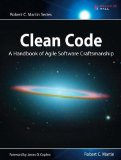The book is a great guide to the basic qualities of good code. While many of the guidelines were familiar, reading the book helped me reconsider some rules that I had followed out of habit, but which no longer make sense. Like many good books even if you know and agree what it says, reading the book can help you explain "the obvious" to others. Clean Code has all the qualities of a classic book. Bob does not just a list of rules for "good" code. He explains why following the rules makes for better code, and provides several examples of how following the rules make arguably good code (like JUnit) better. Buy this book if you write code or manage people who write code. This is a must read if you are developing a coding standard for your team. Even if you don't accept all of Bob's guidelines, reading this book will help you think about what standards make sense for your team.
Related books - Prototype and script.aculo.us: You Never Knew JavaScript Could Do This! by Christophe Porteneuve
-
 This book compliments the online resources nicely, explaining not just what to do, but why, and how to do things best. This book does an excellent job of straddling the line between reference and introduction. The writing style is readable enough that you can read a few chapters just to get a sense of what to do, while at the same time, terse enough that you can find what you need quickly.
This book compliments the online resources nicely, explaining not just what to do, but why, and how to do things best. This book does an excellent job of straddling the line between reference and introduction. The writing style is readable enough that you can read a few chapters just to get a sense of what to do, while at the same time, terse enough that you can find what you need quickly.
- What Every Body is Saying: An Ex-FBI Agent's Guide to Speed-Reading People by Joe Navarro
-
 This book can not only help you to be more aware of when to probe further about whether what someone says is inconsistent with what they may be feeling, but it also can help you be more aware of the messages you may be sending by your gestures, posture, etc. One of the things I like most about this book is that the author sets the expectation that you won't be able to know the "truth" based only on body language but that awareness of body language will help you to understand when you should be paying attention to other details of your interaction with someone. Anyone who works with people, especially in a customer-facing role, would benefit from reading this book.
This book can not only help you to be more aware of when to probe further about whether what someone says is inconsistent with what they may be feeling, but it also can help you be more aware of the messages you may be sending by your gestures, posture, etc. One of the things I like most about this book is that the author sets the expectation that you won't be able to know the "truth" based only on body language but that awareness of body language will help you to understand when you should be paying attention to other details of your interaction with someone. Anyone who works with people, especially in a customer-facing role, would benefit from reading this book.
Related books - Manage It! Your Guide to Modern, Pragmatic Project Management by Johanna Rothman
-
 Manage It! will help you understand how to manage projects effectively, taking into account the needs of the people working on the project as well as the needs of the business sponsors. In this regard Johanna Rothman follows in the steps of authors like Jerry Weinberg by showing you how to set up a project environment that helps software developers be more effective and thus be better able to deliver value to their customers. This book has pragmatic advice on how to make progress and issues visible, how to plan a project, and most everything else you need to help a project come to a good conclusion. This book is unique in that while it discusses the benefits of agile lifecycles, it shows you how to make progress in a variety of software lifecycles, and gives advice on when to use the various lifecycles she discusses. Buy this book if you want to be a more effective project manager (or technical lead who works with project managers), or if you want to be more agile but are not sure how.
Manage It! will help you understand how to manage projects effectively, taking into account the needs of the people working on the project as well as the needs of the business sponsors. In this regard Johanna Rothman follows in the steps of authors like Jerry Weinberg by showing you how to set up a project environment that helps software developers be more effective and thus be better able to deliver value to their customers. This book has pragmatic advice on how to make progress and issues visible, how to plan a project, and most everything else you need to help a project come to a good conclusion. This book is unique in that while it discusses the benefits of agile lifecycles, it shows you how to make progress in a variety of software lifecycles, and gives advice on when to use the various lifecycles she discusses. Buy this book if you want to be a more effective project manager (or technical lead who works with project managers), or if you want to be more agile but are not sure how.
Related books - The Inmates are Running the Asylum by Alan Cooper
-
 This a classic book that anyone who build computer systems should read. Some of the specific examples are dated, though many caused me to nod in acknowledgment, especially his observations about alarm clocks and TV remotes, Inmates describes goal directed design, the concept of Pesonas, ideas which, whether they make sense for your project are not, are ones that you should be aware of. This book also explains what "polite software" is and emphasizes the market advantages to good interaction design. Even if this book doesn't change the way you work, it will help you think about the relationship between interaction design and programming. Among the interesting points Cooper makes are Customer Driven isn't aways the best model (customer influenced is better), and neither is Engineering Driven; software designers should go beyond customers say they want and help them to understand what they need. There were a few things towards the end of the book that struck me as just wrong. For example Cooper says that most developers don't believe that they are the best people to test their code. Most Agile software developers would challenge that point. Agile developers would also challenge the recurring theme that the engineering team can't make the leap to understanding the customer enough to build good interaction design. He ignores the value of a specializing generalist, which is an important concept in today's projects. Regardless, this is a book that anyone building software systems should read, if only to understand the concepts underlying interaction design.
This a classic book that anyone who build computer systems should read. Some of the specific examples are dated, though many caused me to nod in acknowledgment, especially his observations about alarm clocks and TV remotes, Inmates describes goal directed design, the concept of Pesonas, ideas which, whether they make sense for your project are not, are ones that you should be aware of. This book also explains what "polite software" is and emphasizes the market advantages to good interaction design. Even if this book doesn't change the way you work, it will help you think about the relationship between interaction design and programming. Among the interesting points Cooper makes are Customer Driven isn't aways the best model (customer influenced is better), and neither is Engineering Driven; software designers should go beyond customers say they want and help them to understand what they need. There were a few things towards the end of the book that struck me as just wrong. For example Cooper says that most developers don't believe that they are the best people to test their code. Most Agile software developers would challenge that point. Agile developers would also challenge the recurring theme that the engineering team can't make the leap to understanding the customer enough to build good interaction design. He ignores the value of a specializing generalist, which is an important concept in today's projects. Regardless, this is a book that anyone building software systems should read, if only to understand the concepts underlying interaction design.
Related books - Implementing Lean Software Development by Mary and Tom Poppendieck
-
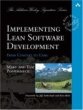Implementing Lean Software Development is an essential resource if you want to understand the value of lean software development. It explains the theory of lean manaufacturing and how it applies to software development. It contains practical advice for implementing Lean and anecdotes to help you to understand the value of Lean. This is a great addition to the library of any agile developer or project manager.
Related books - Wicked Problems, Righteous Solutions by Peter DeGrace and Leslie Hulet Stahl
-
 A Wicked Problem is a problem where some of the solution space lies within the problem space; the problem is only fully understood after it is solved. Thsi book describes how many programming problems fall into the catgegory of wicked problems and how waterfall softwarae development practices are not well suited to these kinds of problems.This book explains how agille approaches are more suited for many software development projects. In addition to all of this, this book had many excellent references.
A Wicked Problem is a problem where some of the solution space lies within the problem space; the problem is only fully understood after it is solved. Thsi book describes how many programming problems fall into the catgegory of wicked problems and how waterfall softwarae development practices are not well suited to these kinds of problems.This book explains how agille approaches are more suited for many software development projects. In addition to all of this, this book had many excellent references.
- Practical Perforce by Laura Wingerd
-
 This is a how-to guide for doing Software Configuration Management with Perforce. In addition to describing hpw the various commands work this book helps you understand how to structure your version control system to use Perforce effectively. This book describes not only how to create branches, but why, and what policy to have on the branch. The Channelling the Flow of Change chapter is a great introduction to change management concepts in general. Buy this book if you are using Perforce as your SCM solution, or even if you are evaluating multiple solutions, and Perforce is a candidate, as this book will help you understand how to structure your environment for effective development.
This is a how-to guide for doing Software Configuration Management with Perforce. In addition to describing hpw the various commands work this book helps you understand how to structure your version control system to use Perforce effectively. This book describes not only how to create branches, but why, and what policy to have on the branch. The Channelling the Flow of Change chapter is a great introduction to change management concepts in general. Buy this book if you are using Perforce as your SCM solution, or even if you are evaluating multiple solutions, and Perforce is a candidate, as this book will help you understand how to structure your environment for effective development.
Related books - Continuous Integration: Improving Software Quality and Reducing Risk by Paul M Duvall
-
 This book is an excellent overview of why Continuous Integration is important and about more than just compiling frequently. The book helps you to understand why to do CI, what you can do beyond building, and how to do it. In addition to general principles, the book points you to some excellent tools and resources. This book is an excellent companion to Software Configuration Management Patterns; it provides teriffic information that support the build patterns in that book.
This book is an excellent overview of why Continuous Integration is important and about more than just compiling frequently. The book helps you to understand why to do CI, what you can do beyond building, and how to do it. In addition to general principles, the book points you to some excellent tools and resources. This book is an excellent companion to Software Configuration Management Patterns; it provides teriffic information that support the build patterns in that book.
Related books - Release It! : Design and Deploy Production-Ready Software by Michael T Nygard
-
 This book helps you to understand why creating production ready code requires work at many levels: creating the deployment architecture, operations scenarios, and just plain writing code and testing. The book covers issues that every architect, developer and release engineer should know. The book has principles, patterns, and resources to help you identify production problems, prevent them, and survive them when all else fails. One of the better features of the book is the stories that help you to understand issues and demonstrate that Nygard's lessons are based in experience. The lessons are (as the name of the series suggests) pragmatic, and each chapter leaves you with enough information to make changes to improve your application. In books of this sort there is a balance between "principles" that are timeless and "how to" techniques that you can use immediately. This book is biased slightly towards Java, and contains a few references to current tools, there are enough general principles that there is little in the book that will date it. As I read the book I found information about many topics that arose in each project that I have worked on, as well as things that I felt that I needed to learn more about. After I finished the book I felt energized to do things better. If you build enterprise applications buy this book to learn how to build more production-ready applications. If you already know the lessons in the book, buy a copy or two for your colleagues who may not so that your life will be easier and you can get fewer late-night phone calls about a system you helped build.
This book helps you to understand why creating production ready code requires work at many levels: creating the deployment architecture, operations scenarios, and just plain writing code and testing. The book covers issues that every architect, developer and release engineer should know. The book has principles, patterns, and resources to help you identify production problems, prevent them, and survive them when all else fails. One of the better features of the book is the stories that help you to understand issues and demonstrate that Nygard's lessons are based in experience. The lessons are (as the name of the series suggests) pragmatic, and each chapter leaves you with enough information to make changes to improve your application. In books of this sort there is a balance between "principles" that are timeless and "how to" techniques that you can use immediately. This book is biased slightly towards Java, and contains a few references to current tools, there are enough general principles that there is little in the book that will date it. As I read the book I found information about many topics that arose in each project that I have worked on, as well as things that I felt that I needed to learn more about. After I finished the book I felt energized to do things better. If you build enterprise applications buy this book to learn how to build more production-ready applications. If you already know the lessons in the book, buy a copy or two for your colleagues who may not so that your life will be easier and you can get fewer late-night phone calls about a system you helped build.
Related books - Ship it! A Practical Guide to Successful Software Projects by Jared Richardson and William Gwaltney
-
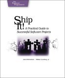If you need a good overview of what it takes to deliver software, give this book a look. It is easy to read, clearly written, and covers the important stuff. The book is geared at people who are less than experts, and as such covers some of the topics very briefly, but the book has some excellent pointers to other sources. The authors do a great job of collecting pointers to resources where you can learn more; you will want to keep the book around as a reference for them. The authors talk about a form of agile development that emphasizes tracer bullet development and a feature-based (as opposed to time boxed) approach to setting a delivery schedule. I tend to think that time boxed approaches are more useful, but the other good information in the book still makes sense if you use any approach to developing software. The authors also have some very practical advice on tool selection. The tools and infrastructure section of the book have pragmatic advice on how to implement the patterns in the Software Configuration Management Patterns book, and I wish that the authors had referenced the SCM Patterns book, if for no other reason than to help establish a common vocabulary in our domain. Over all, this is worth a read to learn (or reenforce) some of the basics about keeping a project running well. And if you already know everything in the book, buy a copy for your colleagues who don't!
Related books - Collapse: How Societies Choose to Fail or Succeed by Jared Diamond
-
People and cultures seem to many things that don't make sense in retrospect. This book asks and attempts to answer the question of why once successful societies disappeared. Diamond combines an historical perspective with a discussion of modern day comunities so that we can see the parallels, and perhaps make better decisions in the future. While not an easy read, Diamond makes a complicated subject very approachable. This is a thought-provoking book that you should read if you are interested in society, the environment, or even just general decision making processes (if whole cultures can make decisions that cause them to fail, what can we expect from organizations!).
Related books - Forty Signs of Rain by Kim Stanley Robinson
-
 Robinson's books are imaginative stories which have their roots in fact and then explore what-if scenarios. Fourty Signs of Rain is part of a trilogy that explores the consequences of global warming. The story line has global implications, but the story is told from the perspective of a few characters who are leading somewhat ordinary lives in the midst of a changing world. The book combines fact, humor, and a lively style for a great read.
Robinson's books are imaginative stories which have their roots in fact and then explore what-if scenarios. Fourty Signs of Rain is part of a trilogy that explores the consequences of global warming. The story line has global implications, but the story is told from the perspective of a few characters who are leading somewhat ordinary lives in the midst of a changing world. The book combines fact, humor, and a lively style for a great read.
Related books - Fifty Degrees Below by Kim Stanley Robinson
-
 This is the second book in a trilogy that starts with Fourty Signs of Rain. This book is even more compelling and entertaining that the first book in the trilogy. Robinson again combines fact, humor, and real characters to entertain and educate.
This is the second book in a trilogy that starts with Fourty Signs of Rain. This book is even more compelling and entertaining that the first book in the trilogy. Robinson again combines fact, humor, and real characters to entertain and educate.
Related books - Agile Estimating and Planning by Mike Cohn
-
 This clearly written book provides insights into some common and vexing problems about how to do estimation and planning. This book helps you to prioritize what you want to build as well as as how long it will take to build it. The facts are complimented with stories from Mike Cohn's experience, which makes this book entertaining as well as informative. Much of the information in the book sounds obvious, but since few projects get estimation, scoping and planning right, it's pretty clear that it's only obvious in retospect. This book is a must have for people who are running agile teams and those who play the role of product owners. It will remain a useful reference througout the project. Even those on non-agile teams will find the chapters on selecting and prioritizing features useful.
This clearly written book provides insights into some common and vexing problems about how to do estimation and planning. This book helps you to prioritize what you want to build as well as as how long it will take to build it. The facts are complimented with stories from Mike Cohn's experience, which makes this book entertaining as well as informative. Much of the information in the book sounds obvious, but since few projects get estimation, scoping and planning right, it's pretty clear that it's only obvious in retospect. This book is a must have for people who are running agile teams and those who play the role of product owners. It will remain a useful reference througout the project. Even those on non-agile teams will find the chapters on selecting and prioritizing features useful.
Related books - Pragmatic Version Control Using Subversion by Mike Mason
-
 Like the other Pragmatic Programmer books, this is an excellent resource for getting started using subversion
Like the other Pragmatic Programmer books, this is an excellent resource for getting started using subversion
Related books - Testing Extreme Programming by Lisa Crispin and Tip House
-
 This book explains, in detail, the value of having a tester role on an XP project. Much of what is written on XP focuses on the role of developers in writing tests, and this book will help you understand the value that testing professionals can add to an XP, or other agile, project. The function of a tester changes when a team applies XP; In the spirt of lean software development, this book shows you how to apply the skills of testers in a new environment. One minor flaw in the book is that it is targeted at testers. While testers need to understand how to apply their skills to an XP environment, others such as Coaches, programmers and project managers also need to understand the value of testers. Get this book to understand how testers can improve your XP project.
This book explains, in detail, the value of having a tester role on an XP project. Much of what is written on XP focuses on the role of developers in writing tests, and this book will help you understand the value that testing professionals can add to an XP, or other agile, project. The function of a tester changes when a team applies XP; In the spirt of lean software development, this book shows you how to apply the skills of testers in a new environment. One minor flaw in the book is that it is targeted at testers. While testers need to understand how to apply their skills to an XP environment, others such as Coaches, programmers and project managers also need to understand the value of testers. Get this book to understand how testers can improve your XP project.
Related books - Extreme Programming Explained : Embrace Change (2nd Edition) by Kent Beck and Cynthia Andres
-
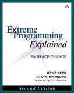This is an excellent book about how to develop software quickly in the face of changing requirements, and the definitive description of what Extreme Programming is. The second edition reflects the experience of doing XP for the 5 years since the first edition came out. This edition clearly explains the relationships between principles, practices and values, which is a frequent topic of discussion in the XP community. Extreme Programming Explained, 2nd Edition is really about the human side of programming; With this book Kent Beck has earned a seat next to Jerry Weinberg as someone who understands how to apply an understanding of human nature to the problem of how to build software effectively. Get this book if you want to apply XP in your organization, or even if you simply want to improve your practices; there is much to learn from the XP approach, even if you can not, or will not, apply it fully.
Related books- Software Configuration Management Patterns: Effective Teamwork, Practical Integration
- The Pragmatic Programmer: From Journeyman to Master
- Test Driven Development: By Example
- The Psychology of Computer Programming, Silver Anniversary Edition
- Agile Estimating and Planning
- User Stories Applied : For Agile Software Development (Addison-Wesley Signature Series)
- Working Effectively with Legacy Code by Michael Feathers
-
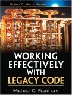This book shows you how to apply patterns and refactorings to the task of untangling legacy code so that you can apply effective techniques like test driven development as you change the code. Since there will always be legacy code, this is a very practical book. The author emphasises the role of testing as a change enabler in a way that echos the the ideas in the SCM Patterns book.
Related books - Fearless Change: Patterns for Introducing New Ideas by Mary Lynn Manns and Linda Rising
-
 The material in this book is excellent, having been developed over a number of years. In addition to wonderful, well written, patterns that advise you on how to spread ideas, this books is full of stories that help you to understand how to use the patterns effectively to influence people, overcome roadblocks, and spread new ideas. Anyone who has new ideas to share will benefit from this book including: Managers and Team members, Professionals and Volunteers, people in industry and those in community organizations.
The material in this book is excellent, having been developed over a number of years. In addition to wonderful, well written, patterns that advise you on how to spread ideas, this books is full of stories that help you to understand how to use the patterns effectively to influence people, overcome roadblocks, and spread new ideas. Anyone who has new ideas to share will benefit from this book including: Managers and Team members, Professionals and Volunteers, people in industry and those in community organizations.
Related books - Communication Gaps and How to Close Them by Naomi Karten
-
 If you work with or live with other people you should read this book. It is filled with information on understanding how communication gaps happen, and practical advice for resolving commuunications issues with other people. Most of the advice seems obvious, yet it if often the obvious that one needs to be reminded of. Among the extremely practical bits of information in the book is are dicussions of communication models (so that you can understand why communication might break down), and a chapter on how to write Service Level Agreements.
If you work with or live with other people you should read this book. It is filled with information on understanding how communication gaps happen, and practical advice for resolving commuunications issues with other people. Most of the advice seems obvious, yet it if often the obvious that one needs to be reminded of. Among the extremely practical bits of information in the book is are dicussions of communication models (so that you can understand why communication might break down), and a chapter on how to write Service Level Agreements.
Related books - JUnit Recipes: Practical Methods for Programmer Testing by J. B. Rainsberger and Scott Stirling
-
 Get this book both as an introduction to what JUnit can do for you and also as a reference when you are looking for information on how to solve a particular testing problem. The book covers the basics of using JUnit as well as issues around database and J2EE testing. It is filled with pointers to many frameworks and resources that can simplify your testing experience. This is not just a testing cookbook. J.B. also discusses issues such as how to design for testing (and how that can improve your architecture) as well as what to do when you need to test legacy code. This is an excellent guide to the details of how to use JUnit effectively.
Get this book both as an introduction to what JUnit can do for you and also as a reference when you are looking for information on how to solve a particular testing problem. The book covers the basics of using JUnit as well as issues around database and J2EE testing. It is filled with pointers to many frameworks and resources that can simplify your testing experience. This is not just a testing cookbook. J.B. also discusses issues such as how to design for testing (and how that can improve your architecture) as well as what to do when you need to test legacy code. This is an excellent guide to the details of how to use JUnit effectively.
Related books - Lean Thinking : Banish Waste and Create Wealth in Your Corporation, Revised and Updated by James P. Womack, Daniel T. Jones, James Womack and Daniel Jones
-
 This book explains why lean manufacturing works. There is much you can learn about lean software development by learning about lean thinking in this, more concrete, domain. Read this book to learn the more general concepts of lean production so that you can better understand them and better explain them to your software development colleagues and management.
This book explains why lean manufacturing works. There is much you can learn about lean software development by learning about lean thinking in this, more concrete, domain. Read this book to learn the more general concepts of lean production so that you can better understand them and better explain them to your software development colleagues and management.
Related books - Domain-Driven Design: Tackling Complexity in the Heart of Software by Eric Evans
-
 Developing a language to enable communication between team memembers and with domain experts seems like a common enough idea. Most teams do not do this and start their application by solving technology problems. This book describes the utility of a domain-driven approach to building systems and shows you how to apply this approach effectively. This book makes excellent use of patterns to demonstrate how design, architecture and development practices such as continuous integration interact with each other to determine how good your application will be. Like all good patterns books, the information in this book seems obvious once you read it. But it is material most people overlook. Buy this books to understand the value of a domain driven approach, or if you already understand that, use it as a guide for teaching others.
Developing a language to enable communication between team memembers and with domain experts seems like a common enough idea. Most teams do not do this and start their application by solving technology problems. This book describes the utility of a domain-driven approach to building systems and shows you how to apply this approach effectively. This book makes excellent use of patterns to demonstrate how design, architecture and development practices such as continuous integration interact with each other to determine how good your application will be. Like all good patterns books, the information in this book seems obvious once you read it. But it is material most people overlook. Buy this books to understand the value of a domain driven approach, or if you already understand that, use it as a guide for teaching others.
- Organizational Patterns of Agile Software Development by James O. Coplien and Neil B. Harrison
-
 People build software systems in organizations, and the interesting problems often occur at the places where technology issues and people issues intersect. An understanding of how software organizations work is essential to building good software systems. Coplien and Harrison are two of the pioneers in writing patterns about software organizations, and this book is a useful guide to helping you understand how to build effective software development organizations.
People build software systems in organizations, and the interesting problems often occur at the places where technology issues and people issues intersect. An understanding of how software organizations work is essential to building good software systems. Coplien and Harrison are two of the pioneers in writing patterns about software organizations, and this book is a useful guide to helping you understand how to build effective software development organizations.
Related books - Requirements by Collaboration: Workshops for Defining Needs by Ellen Gottesdiener
-
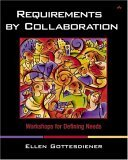This book is about running requirements workshops and more. Requirements workshops are an important tool for understanding what you need to build. The techniques in this book will be useful in many other group discussion settings, and will help you have more productive meetings. The book discusses, among other things, roles in workshops and decision rules (deciding how to decide). Each chapter ends with a list of excellent references that you can use to probe further on techniques. Anyone who is involved in group decision making should own a copy of this book, read it, and refer back to it often.
Related books - Agile Project Management with Scrum by Ken Schwaber
-
 This book helped me understand more details about how to implement Scrum. The combines some simple overviews of Scrum rules and practices with case studies. The rules of Scrum are simple. Apply these rules in your context can be tricky. I found that the case studies that thread throughout the book really helped me to understand some of the nuances of the Scrum process. And if you want a checklist, there is a appendix that summarizes the rules of Scrum. This is a great book if you want to learn about Scrum as a project management tool, or if you have been trying to use Scrum and want a chance to renew your understanding.
This book helped me understand more details about how to implement Scrum. The combines some simple overviews of Scrum rules and practices with case studies. The rules of Scrum are simple. Apply these rules in your context can be tricky. I found that the case studies that thread throughout the book really helped me to understand some of the nuances of the Scrum process. And if you want a checklist, there is a appendix that summarizes the rules of Scrum. This is a great book if you want to learn about Scrum as a project management tool, or if you have been trying to use Scrum and want a chance to renew your understanding.
Related books - Pragmatic Project Automation: How to Build, Deploy, and Monitor Java Apps by Mike Clark
-
 Prag Auto is an excellent companion to the Scm patterns book if you are doing Java Dev. It uses simple examples to show you how to set up a private workspace, integration build , release line among others. using open source tools. I wish that the book had referenced the patterns by name so as to set up a common vocabulary.
Prag Auto is an excellent companion to the Scm patterns book if you are doing Java Dev. It uses simple examples to show you how to set up a private workspace, integration build , release line among others. using open source tools. I wish that the book had referenced the patterns by name so as to set up a common vocabulary.
Related books - Pragmatic Version Control Using CVS by Dave Thomas and Andy Hunt
-
 Dave Thomas and Andy Hunt have written an excellent book, Pragmatic Version Control which explains how to use CVS in a basic and effective way. This book is an excellent companion to the SCM Patterns Book.
Dave Thomas and Andy Hunt have written an excellent book, Pragmatic Version Control which explains how to use CVS in a basic and effective way. This book is an excellent companion to the SCM Patterns Book.
Related books - UML Distilled: A Brief Guide to the Standard Object Modeling Language, Third Edition by Martin Fowler
-
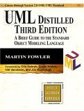This is an excellent summary of the UML, and a great guide to how to express OO models using the UML. If you buy only one UML book, get this one. It The third edition is updated to the UML 2.0 spec. Fowler explains that the book is best for people who want to sketch UML diagrams to explain their designs, rather than who want to use UML for formally, but that may well be all you need to do with UML. This book also explains some key concepts of OO design. Every software developer should have a copy of this book on their shelves!
- User Stories Applied : For Agile Software Development (Addison-Wesley Signature Series) by Mike Cohn
-
 This is an excellent guide to writing User Stories. In addition to explaining what user stories are and how to write them, the book shows you how user stories fit into the development process and answers many of the common questions that arise when one starts writing stories. If you want to start using stories as part of your development process, buy this book; you'll want to read it and have it around for reference later.
This is an excellent guide to writing User Stories. In addition to explaining what user stories are and how to write them, the book shows you how user stories fit into the development process and answers many of the common questions that arise when one starts writing stories. If you want to start using stories as part of your development process, buy this book; you'll want to read it and have it around for reference later.
- JSTL in Action by Shawn Bayern
-
This is a good book to learn about how to use JSTL. It has an excellent reference section, and the body of the book explains how to use the JSTL tags with many good example. On the whole, a very useful, readable book. One negative: The author has a sense of humor which some might find odd, and he interjects it throughout the book; at times it's distracting. But if you can get past that, you'll find this to be a good resource.
- Struts in Action: Building Web Applications with the Leading Java Framework by Ted Husted, Cedric Dumoulin, George Franciscus, David Winterfeldt and Craig R. McClanahan
-
I read this book after working on Struts applications for a few months, and it added understanding to my knowledge about Struts applications. I marked many pages that illustrated approaches that I wanted to use on my projects, either because my team had problems with that aspect of Struts, or because the approach in the book seemed better. In addition to explaining how to build Struts applications, it also provides good, practical, advice about structuring your Struts applications so that they are maintainable and understandable. I refer to this book often, and it is an excellent complement to the online documentation.
- Design Patterns in C# by Steven John Metsker
-
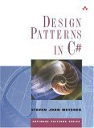This book will serve you well whether you know Patterns and are trying to learn C# or know C# and are trying to understand Patterns better. It is not a replacement for the Design Patterns Book or a good C+ reference, but it is an excellent companion for both.
- Software Configuration Management Implementation Roadmap by Mario E. Moreira
-
 Finding the path to the right process for your project and organization is tricky, and this book provides a map of the terrain that can guide you to the implementation appropriate for your project. This book will guide you through the steps that you need to take if you need to implement an SCM process for your organization at an organization, application, or project level. It includes customizable templates and examples to more quickly get you to your SCM goals.
Finding the path to the right process for your project and organization is tricky, and this book provides a map of the terrain that can guide you to the implementation appropriate for your project. This book will guide you through the steps that you need to take if you need to implement an SCM process for your organization at an organization, application, or project level. It includes customizable templates and examples to more quickly get you to your SCM goals.
Related books - Pair Programming Illuminated by Laurie Williams and Robert Kessler
-
This book answers many common questions about Pair Programming and supports the answers with data and stories. This is a very readable book, and will be an excellent resource for anyone trying to implement pair programming, or convince others of its usefulness in appropriate situations.
- Joe Celko's SQL for Smarties: Advanced SQL Programming by Joe Celko
-
SQL for Smarties is a book that you should own if you work with relational databases. It has good practical advice and good examples. It is useful both for improving your SQL skills and as a reference.
- Project Retrospectives: A Handbook for Team Reviews by Norm Kerth
-
Project Retrospectives is a must have for anyone who wants(or needs)to understand what happened on their last project. If you plan to conduct a retrospective, the book will show you how with exercises to use with your group. Even if you do not run formal retrospectives, the techniques in this book will help you get a more candid view of how things on your project work.
- Questioning Extreme Programming by Pete McBreen
-
In this book McBreen gives a well reasoned discussion of what XP is and is not, when it works and when it might not work. The book is positive about the merits of XP, when used in the right setting. This book will be valuable to anyone who is considering changing their development approach, even is they are not considering Extreme Programming. Both enthusiast and skeptics alike will find the material in the book thought provoking.
Related books - Planning Extreme Programming by Kent Beck and Martin Fowler
-
 Planning Extreme Programming gives you advice on how to fit the XP Planning game, and related aspects into the larger context. This book will be particularly useful if you have had to reconcile the XP approach of incremental development and planning with an organization that takes a master plan approach.
Planning Extreme Programming gives you advice on how to fit the XP Planning game, and related aspects into the larger context. This book will be particularly useful if you have had to reconcile the XP approach of incremental development and planning with an organization that takes a master plan approach.
- Extreme Programming Installed by Ron Jeffries, Ann Anderson and Chet Hendrickson
-
 Extreme Programming Installed describes how to implement XP practices with practical advice based on experience. Buy this book when you are ready to implement XP for your team.
Extreme Programming Installed describes how to implement XP practices with practical advice based on experience. Buy this book when you are ready to implement XP for your team.
Related books - Software Architecture: Organizational Principles and Patterns by David M. Dikel, David Kane and James R. Wilson
-
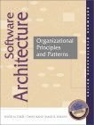This is one of the most useful books on software architecture that I have read. It discusses the qualities of a good architecture, and how the organization and process relates to the architecture.
- Software Release Methodology by Michael E. Bays
-
This book has a good discussion of various types of codelines, as well as branching and merging strategies. It is clearly written and is a good resource if you want to go into more depth about branching strategies.
- Artful Making: What Managers Need to Know About How Artists Work by Rob Austin and Lee Devin
-
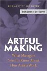The principles that this book discusses: Release, Collaboration Ensemble and Play are extremely relevant to creating effective software teams. The principles are inspired by observing how theatre companies work, but they also have a basis in lean manufacturing. If you work as a software developer or manager and have ever worked on a theatre production (community theatre or at school) a light will go on immediately. If you haven't The data that the authors provide about lean manufacturing practices and software development will convince you that there is a lot that we can learn from this metaphor. The theatre examples will be helpful in explaining how the principles work if you need to communicate them to a manager who does not understand software development. Buy this book and place it along side your books on agile software development; you will want to read it and refer back to it frequently.
Related books - Test Driven Development: By Example by Kent Beck
-
 Through examples and a collection of patterns, this book explains what test driven development is, and what it is for. Every agile developer should read this book.
Through examples and a collection of patterns, this book explains what test driven development is, and what it is for. Every agile developer should read this book.
Related books - Lean Software Development: An Agile Toolkit for Software Development Managers by Mary Poppendieck and Tom Poppendieck
-
 This is an excellent discussion of how the principles of Lean Manufacturing apply to Software Development. The authors explain why the usual metaphor of software as manufacturing is not quite right, and why the metaphor of Lean Manufacturing is. It is well written and will be useful to refer to as a reference.
This is an excellent discussion of how the principles of Lean Manufacturing apply to Software Development. The authors explain why the usual metaphor of software as manufacturing is not quite right, and why the metaphor of Lean Manufacturing is. It is well written and will be useful to refer to as a reference.
Related books - Mayhem: Violence As Public Entertainment by Sissela Bok
-
 Bok discusses the role of violence in popular culture. Aside from having a great title, this book is a very good discussion of the issues and how we can address them.
Bok discusses the role of violence in popular culture. Aside from having a great title, this book is a very good discussion of the issues and how we can address them.
- Flow by Mihaly Csikszentmihalyi
-
 This book discusses the psychology of optimal experience, in other words, happiness. This books is not a how-to book, but rather a why book. Reading this book may give you great insights into how to enjoy all aspects of your work and private life.
This book discusses the psychology of optimal experience, in other words, happiness. This books is not a how-to book, but rather a why book. Reading this book may give you great insights into how to enjoy all aspects of your work and private life.
- Agile Software Development with SCRUM by Ken Schwaber and Mike Beedle
-
 Excellent book that explains Scrum, one of the more popular agile development techniques. The approach in this book is very pragmatic. The authors discuss what Scrum is and how to apply it in various environments.
Excellent book that explains Scrum, one of the more popular agile development techniques. The approach in this book is very pragmatic. The authors discuss what Scrum is and how to apply it in various environments.
Related books - Beyond Software Architecture: Creating and Sustaining Winning Solutions by Luke Hohmann
-
All you ever wanted to know about product management, but were afraid to ask. This book discusses the relationship between technical-architecture and marketing-architecture. This is an oft-neglected subject, but it is important as marketing and technology are both important for a successful product. This is a great book to read if you design software systems, or are involved in product management.
- Waltzing With Bears: Managing Risk on Software Projects by Tom DeMarco and Timothy Lister
-
 You should buy this book if you have any role in making decisions about your project. It discusses how how manage risks and explains why some corporate cultures discourage risk management, often to their disadvantage. The writing is very clear. This is a quick and informative read.
You should buy this book if you have any role in making decisions about your project. It discusses how how manage risks and explains why some corporate cultures discourage risk management, often to their disadvantage. The writing is very clear. This is a quick and informative read.
Related books - Configuration Management Principles and Practice by Anne Mette Jonassen Hass and Glenn Hass
-
 This book is less about how to do SCM than about what SCM is. It is a great resource to read and to have on your shelf if you want to understand the scope of SCM. It is not entirely clear to me why this book is in AW's Agile series, but it is a worthwhile read so that you can understand what aspects of more formal SCM that you may be (justifiably) skipping on your project after you have implemented the techniques in the SCM Patterns book.
This book is less about how to do SCM than about what SCM is. It is a great resource to read and to have on your shelf if you want to understand the scope of SCM. It is not entirely clear to me why this book is in AW's Agile series, but it is a worthwhile read so that you can understand what aspects of more formal SCM that you may be (justifiably) skipping on your project after you have implemented the techniques in the SCM Patterns book.
Related books - Peopleware : Productive Projects and Teams, 2nd Ed. by Tom Demarco and Timothy Lister
-
 This is a classic book. Everyone involved with software systems: developers, managers, and customers, should read this book.
This is a classic book. Everyone involved with software systems: developers, managers, and customers, should read this book.
Related books - Writers' Workshops & the Work of Making Things: Patterns, Poetry... by Richard Gabriel
-
 This is a unique book. It tells you about the writers workshop process. The writers workshop process has its origins in the creative writing community, and has been used in the software patterns community. Richard Gabriel explains how the process can also be used in other domains where creative effort is involved, such as reviewing marketing materials. I book for two reasons. First it provide great insight into the creative process (as applied to anything) and the values that are used in the writers workshop can benefit anyone who creates things, even if they don't use the workshop process. Second, if you do want to use writers workshops, this book explains the hows and whys of them. I had been involved in workshopping software patterns since 1995, and I though that I pretty much understood what they were about. I learned a lot reading this book. I recommend this book for anyone who involved in the creative process(of any sort): Software engineers, writers, teachers, and students.
This is a unique book. It tells you about the writers workshop process. The writers workshop process has its origins in the creative writing community, and has been used in the software patterns community. Richard Gabriel explains how the process can also be used in other domains where creative effort is involved, such as reviewing marketing materials. I book for two reasons. First it provide great insight into the creative process (as applied to anything) and the values that are used in the writers workshop can benefit anyone who creates things, even if they don't use the workshop process. Second, if you do want to use writers workshops, this book explains the hows and whys of them. I had been involved in workshopping software patterns since 1995, and I though that I pretty much understood what they were about. I learned a lot reading this book. I recommend this book for anyone who involved in the creative process(of any sort): Software engineers, writers, teachers, and students.
- Software Configuration Management Patterns: Effective Teamwork, Practical Integration by Steve Berczuk (with Brad Appleton )
-
 This book describes Essential SCM practices. Developers, team leaders and those just learning about software configuration management should find this book useful.
This book describes Essential SCM practices. Developers, team leaders and those just learning about software configuration management should find this book useful.
Related books - Patterns of Enterprise Application Architecture by Martin Fowler with David Rice, Matthew Foemmel, Edward Hieatt, Robert Mee and Randy Stafford
-
This book is an excellent collection of tools to have available when designing and building enterprise or web applications. This is more of a patterns collection or pattern catalog, than a pattern language, but the author ties the patterns together in a way that makes it possible to compare and contrast the various approaches. This is also a very readable book. Get a copy, skim through it to get familiar with what is there, and keep it on your shelf for ready reference.
- Software Craftsmanship: The New Imperative by Pete McBreen.
-
 This book discusses the differences between a craft approach and an engineering approach to building software, and the benefits of using a craft approach to build most software applications. It is a great book to read to learn how to think about your career, or how to build a software organization. This book is not about Agile Development, per se , but if you are interested in that, you should read this book too because the Agile development works best when there are people skilled in the craft of software working on the project.
This book discusses the differences between a craft approach and an engineering approach to building software, and the benefits of using a craft approach to build most software applications. It is a great book to read to learn how to think about your career, or how to build a software organization. This book is not about Agile Development, per se , but if you are interested in that, you should read this book too because the Agile development works best when there are people skilled in the craft of software working on the project.
Related books - Slack: Getting Past Burnout, Busywork, and the Myth of Total Efficiency by Tom DeMarco.
-
 This is an excellent book that explains very clearly how working longer hours with fewer resources in the quest for efficiency is counter productive for knowledge work, such as software development. This is a quick read, with many interesting stories to support the assertions that the book makes. The book is targeted at managers but also makes the point that leadership can happen at any level in the organization.
This is an excellent book that explains very clearly how working longer hours with fewer resources in the quest for efficiency is counter productive for knowledge work, such as software development. This is a quick read, with many interesting stories to support the assertions that the book makes. The book is targeted at managers but also makes the point that leadership can happen at any level in the organization.
- Agile Software Development Ecosystems : Problems, Practices, and Principles by Jim Highsmith.
-
An excellent survey to the principles of agile development approaches such as Extreme Programming , SCRUM, and others. The book mixes discussions of the core ideas with interviews with some of the founders of the Agile Alliance .
Related books - Surviving Object-Oriented Projects. A Manager's Guide by Alistair Cockburn
- A good overview of how a move to object technology can, and cannot effect project success. Using case studies, Alistair Cockburn describes the importance of people in the success of an OO project. He also emphasises that the move to object technology involves a different way of thinking, not just a new programming language.
- The Deadline. A Novel About Project Management by Tom DeMarco.
-
 DeMarco's book is similar in style to The Goal but covers software development rather than manufacturing. The protagonist takes on a difficult management assignment and learns many of th e lessons of modern project management. It is a quick, enjoyable read, and it passes on its lessons with humor, so they are easily remembered. You will want to read some more traditional books on project management, it addition to this book, but this book motivates the lessons in more traditional books.
DeMarco's book is similar in style to The Goal but covers software development rather than manufacturing. The protagonist takes on a difficult management assignment and learns many of th e lessons of modern project management. It is a quick, enjoyable read, and it passes on its lessons with humor, so they are easily remembered. You will want to read some more traditional books on project management, it addition to this book, but this book motivates the lessons in more traditional books.
- The Psychology of Computer Programming, Silver Anniversary Edition by Gerald M. Weinberg
-
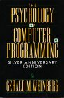A classic book! This is the original text with comments by Weinberg at the end of each chapter on what he'd say differently now. It is easy to get past the examples which revolve around batch systems, and realize that the core ideas in the book are still valid.
Related books - Becoming a Technical Leader : An Organic Problem-Solving Approach by Gerald Weinberg.
-
 This book has lots of good information for technical people at all levels. This book even has some good work-style and problem solving ideas for non-technical people.
This book has lots of good information for technical people at all levels. This book even has some good work-style and problem solving ideas for non-technical people.
Related books - The Secrets of Consulting by Gerald Weinberg.
-
 Everyone consults, according to Weinberg, and you'll find lots of useful stuff here, whether you are a full time employee, contract employee, or someone who is considering consulting.
Everyone consults, according to Weinberg, and you'll find lots of useful stuff here, whether you are a full time employee, contract employee, or someone who is considering consulting.
Related books - More Secrets of Consulting: The Consultants Toolkit by Gerald Weinberg.
-
 This book talks about how you can keep yourself focused on doing the right things. The text and examples are geared to consultants, but most everyone will find these "tools" useful.
This book talks about how you can keep yourself focused on doing the right things. The text and examples are geared to consultants, but most everyone will find these "tools" useful.
Related books - Systems Thinking by Gerald Weinberg
-
 The three books of the 4 volume Quality Software Management series I've read (Volume 1: Systems Thinking , Volume 2: First-Order Measurement , and Volume 3: Congruent Action ) had really good stuff on the people issues that affect software development. Even if you are not a manager, these books provide you with information on how to work more effectively with team members and managers alike, and, understand, if not justify some annoying management practices. (I haven't yet read Volume 4: Anticipating Change , but there is probably valuable stuff in there as well.)
The three books of the 4 volume Quality Software Management series I've read (Volume 1: Systems Thinking , Volume 2: First-Order Measurement , and Volume 3: Congruent Action ) had really good stuff on the people issues that affect software development. Even if you are not a manager, these books provide you with information on how to work more effectively with team members and managers alike, and, understand, if not justify some annoying management practices. (I haven't yet read Volume 4: Anticipating Change , but there is probably valuable stuff in there as well.)
- First-Order Measurement by Gerald Weinberg
-
 Even if you are not a manager, the books in this Quality Software Management Series provide you with information on how to work more effectively with team members and managers alike, and, understand, if not justify some annoying management practices.
Even if you are not a manager, the books in this Quality Software Management Series provide you with information on how to work more effectively with team members and managers alike, and, understand, if not justify some annoying management practices.
- Congruent Action by Gerald Weinberg
-
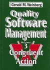Even if you are not a manager, the books in this Quality Software Management Series provide you with information on how to work more effectively with team members and managers alike, and, understand, if not justify some annoying management practices.
- Sources of Power. How People Make Decisions by Gary Klein.
-
 This book is about how people make decisions in a variety of circumstances. This includes solo decision making in crisis situations, as well as team decisions. Discusses the value of stories in expressing and clarifying the decision making process. The discussion of stories (known uses) and the importance of clarifying intent while giving instructions make this worthwhile reading for those studying patterns as a means of conveying expertise.
This book is about how people make decisions in a variety of circumstances. This includes solo decision making in crisis situations, as well as team decisions. Discusses the value of stories in expressing and clarifying the decision making process. The discussion of stories (known uses) and the importance of clarifying intent while giving instructions make this worthwhile reading for those studying patterns as a means of conveying expertise.
- Journey of the Software Professional: A Sociology of Software Development by Luke Hohmann
-
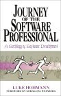This book really made me think about my work, both day to day and career-wise. Covers practical approaches to improving culture, communication, and work environment. My favorite chapters were Avoiding Bad Working Environments and Working In a Poor Environment .
- How Good People Make Tough Choices: Resolving the Dilemmas of Ethical Living by Rushworth M. Kidder.
-
This book describes a framework for analyzing and resolving ethical dilemmas. It does not provide you with answers, but it does provide a great way of thinking about the issues and how to resolve them. The text has examples based on real situations: from life-and-death scenarios, to the more banal, but still difficult.
Related books - Difficult Conversations : How to Discuss What Matters Most by Douglas Stone, Bruce Patton and Sheila Heen.
-
 An excellent resource on how to approach issues at work and at home. Should be required reading for everyone who is part of a team or a relationship.
An excellent resource on how to approach issues at work and at home. Should be required reading for everyone who is part of a team or a relationship.
Related books - Getting to Yes : Negotiating Agreement Without Giving In by Roger Fisher and William Ury.
-
 This is one of the "classic" books on negotiation, and still worth a read. This book is worth reading if you need to negotiate
anything(requirements, assignments, schedules) as part of your job. It also has some insights that will help in personal relationships.
This is one of the "classic" books on negotiation, and still worth a read. This book is worth reading if you need to negotiate
anything(requirements, assignments, schedules) as part of your job. It also has some insights that will help in personal relationships.
Related books - Getting Past No : Negotiating Your Way from Confrontation to Cooperation by William Ury.
-
 This book builds on Getting to Yes . If you find yourself in having trouble making headway in negitiation situations, it is worth a read. But read Getting to Yes first.
This book builds on Getting to Yes . If you find yourself in having trouble making headway in negitiation situations, it is worth a read. But read Getting to Yes first.
Related books - Are Your Lights On? by Gerald M. Weinberg.
-
 An easy to read, entertaining book that illustrates quite clearly what some people never really learn: you need to know what the problem is before looking for a solution.
An easy to read, entertaining book that illustrates quite clearly what some people never really learn: you need to know what the problem is before looking for a solution.
- Analysis Patterns by Martin Fowler.
-
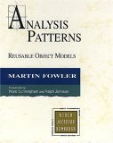Patterns on how to model business and systems and organizations. This book will save you from heading into a lot of dead ends if you walk into a system when you need to model a business process. A book which covers similar material, but from a database modeling point of view is Data Model Patterns by David Hay. While these are "patterns" in the more conventional sense (recurring structures, but not broken down into Problem/Context/Solution), this book will tell you a lot about database design.
- Design Patterns by the "Gang of Four" (Gamma, Helm, Johnson & Vlissides).
-
 This the one book everyone who talks about patterns has should read. It collects the basic software design idioms everyone doing object-oriented software development should know.
This the one book everyone who talks about patterns has should read. It collects the basic software design idioms everyone doing object-oriented software development should know.
- Pattern Hatching by the John Vlissides .
-
Using Design Patterns in more detail. This book discusses some of the fine points of the Patterns in Design Patterns . This is a well written book that is based on a series of columns from C++ Report . Unlike many compilations of columns, this book reads like a coherent book.
- A System of Patterns by Buschmann, Meunier, Rohnert, Sommerlad, Stal.
-
 This book has system level patterns than design patterns. It also uses a lot of examples from distributed systems.
This book has system level patterns than design patterns. It also uses a lot of examples from distributed systems.
- A Pattern Language by Christopher Alexander, Sara Ishikawa, Murray Silverstein
-
 A must read if you are interested in patterns or architecture or urban planning. In the software patterns community, A Pattern Language is often used as an example of how, a pattern language (as opposed to solitary patterns) should be structured.
A must read if you are interested in patterns or architecture or urban planning. In the software patterns community, A Pattern Language is often used as an example of how, a pattern language (as opposed to solitary patterns) should be structured.
- The Timeless Way of Building by Christopher Alexander
-
 The philiosphy behind patterns and pattern languages. Really helpful in understanding the why of patterns.
The philiosphy behind patterns and pattern languages. Really helpful in understanding the why of patterns.
- The Oregon Experiment by Christopher Alexander
-
 This book gives a concrete example of how one would apply patterns and pattern languages to a planning/architecture project. Talks about a project at the University of Oregon. Reading this book put some key ideas into focus, like how you use patterns when not starting from scratch, and how to deal with specialized situations where the book of patterns you have doesn't cover everything.
This book gives a concrete example of how one would apply patterns and pattern languages to a planning/architecture project. Talks about a project at the University of Oregon. Reading this book put some key ideas into focus, like how you use patterns when not starting from scratch, and how to deal with specialized situations where the book of patterns you have doesn't cover everything.
- The Pragmatic Programmer: From Journeyman to Master by
-
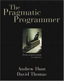This is an excellent book that explains very clearly many practical things that people often ignore. A great book to read, and one that you will want to re-read sections of from time to time.
Related books - Refactoring: Improving the Design of Existing Code by Martin Fowler
-
 This book describes what to do to change code that has gotten messy with time, and how to proceeed to make the changes. If you've been doing Object-Oriented programming for a while you probably know much of what is in here, but it is worth reading anyway, both as a reminder, and as a way to explain the techniques to others. Fowler describes the refactorings very clearly, with guidelines on when to use each technique. Like Design Patterns, this book provides a vocabulary for the important techniques you use to change code. The examples are in Java, but the techniques can be adapted to any OO language, such as C++ quite readily.
This book describes what to do to change code that has gotten messy with time, and how to proceeed to make the changes. If you've been doing Object-Oriented programming for a while you probably know much of what is in here, but it is worth reading anyway, both as a reminder, and as a way to explain the techniques to others. Fowler describes the refactorings very clearly, with guidelines on when to use each technique. Like Design Patterns, this book provides a vocabulary for the important techniques you use to change code. The examples are in Java, but the techniques can be adapted to any OO language, such as C++ quite readily.
- Software for Use: A Practical Guide to the Models and Methods of Usage-Centered Design by By Larry L. Constantine and Lucy A. D. Lockwood
-
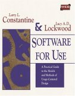This is an excellent book about how to build good interfaces. The book, at first glance, is geared towards uasbility professionals, but anyone who has a role in building or specifying systems that have some sort of user interface will benefit from reading, and referring to, this book.
- Rapid Development, Taming Wild Software Schedules by Steve McConnell.
-
 An excellent book that describes best practices for the entire software development lifecycle. This should be required reading for anyone planning or working on a software project.
An excellent book that describes best practices for the entire software development lifecycle. This should be required reading for anyone planning or working on a software project.
Related books - Component Software: Beyond Object-Oriented Programming by Clements Szyperski.
- This is an excellent discussion about component software. It covers general issues involved in component design and distribution, including technical issues and marketing issues. It provides a good comparison of the major component technologies (COM, CORBA and Java Beans), and it also contains a good deal of timeless information. While this is not always light reading, it is very well written. This is a book developers, architects, and product managers can all read parts of!
- HTTP: The Definitive Guide by David Gourley
-
 This book does a great job of describing enough of what you need to know about HTTP to have a useful conversation about web architecture. It is written well enough that you can just read through it, and it also make a great resource when you need to look something up. And there is all sorts of useful reference material in the appendicies.
This book does a great job of describing enough of what you need to know about HTTP to have a useful conversation about web architecture. It is written well enough that you can just read through it, and it also make a great resource when you need to look something up. And there is all sorts of useful reference material in the appendicies.
- Designing Web Usability by Jakob Nielson
-
 An excellent book. It describes what is in an effective web sites, and provides many examples of good and bad web design. People who work with web sites at all levels: users, project managers, and people who implement web sites, will find this book incredibly useful and inspirational. Read this book before doing any work on a web site or intranet.
An excellent book. It describes what is in an effective web sites, and provides many examples of good and bad web design. People who work with web sites at all levels: users, project managers, and people who implement web sites, will find this book incredibly useful and inspirational. Read this book before doing any work on a web site or intranet.
- The XML Companion(3rd Edition) by Neil Bradley
-
The best guide and refererence to XML I've seen so far. I've had people recommend The XML Bible by Harold to me, but this book seems like a more useful reference.
- The XSL Companion (2nd Edition) by Neil Bradley
-
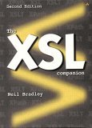Like his book on XML, this book gives you enough to get started, and has enough in it to keep as a refererence.
- How Buildings Learn : What Happens After They're Built by Stewart Brand.
-
 This is a great book if you are interested in architecture, history, or just simply how systems change and grow over time.
This is a great book if you are interested in architecture, history, or just simply how systems change and grow over time.
- The Clock of the Long Now : Time and Responsibility by Stewart Brand
-
An interesting book. Brand discusses the Long Now project, but puts it in the context of the different time scales we all work on. If you didn't already understand it, this book explains when and why the long view is necessary. I think that this is a worthwhile read for systems designers, as well as excellent general interest reading.
- Guns, germs, and steel : the fates of human societies by Jared M. Diamond
-
Interesting, and well written, historical overview of how the environment shaped the development of human society. It's a sort of history of the world in 400 pages. This book gives lots of examples of the differences between apparent causes and root causes. It you like history, or are often curious about why things are, this is a worthwhile book.
- The Victorian Internet by Tom Standage
-
 This book describes parallels between the social impact of the telegraph and that of the Internet. The title put me off the book initially, since I thought that comparisions between the telegraph and the Internet would be tenuous. Howev er, I was surprised to find out that there were issues about on-line romances, on-line fraud, among other familiar sounding issues, in the age of the telegraph. This book is yet another reminder that there are a whole host of issues that continue to arise whenever a new communications technology is introduced. A quick, interesting read.
This book describes parallels between the social impact of the telegraph and that of the Internet. The title put me off the book initially, since I thought that comparisions between the telegraph and the Internet would be tenuous. Howev er, I was surprised to find out that there were issues about on-line romances, on-line fraud, among other familiar sounding issues, in the age of the telegraph. This book is yet another reminder that there are a whole host of issues that continue to arise whenever a new communications technology is introduced. A quick, interesting read.
- How the Mind Works by Steve Pinker.
-
The title pretty much explains it. Given the title this is a very approachable book, and even has its amusing moments. I found it a bit easier to read than The Language Instinct , which is also worth a look if you are interested in where language comes from.
- The Invisible Computer by Donald A. Norman.
-
A mix of Norman's usual excellent ideas about usability combined with the market concepts of Crossing The Chasm . An excellent book that guides us to the coming era when computers are in tools we use everyday, rather than complicated devices we need to be experts to use.
- The Practice of Programming by B. W. Kernighan and R. Pike
- A collection of good, time tested, ideas. The authors give examples in C++, Java, scripting languages, and C. The examples are biased towards C, but there are good general principles about design, coding, debugging and testing. Combine this book with Multi-Paradigm Design for C++ , and you will have inspiration to look at problems multiple ways before jumping in and coding.
- Programming Pearls by Jon Louis Bentley
-
 This is one of those classic books that you should read. Lots of good programming basics.
This is one of those classic books that you should read. Lots of good programming basics.
- Code Complete by Steve McConnell.
- This book is an excellent resource about the mechanics of coding. While some of the examples are language specific, the principles are general. You should at least skim through, if not read and own, this book at some point in your career.
- Multi-Paradigm Design for C++ by Jim Coplien.
-
Coplien explains how to apply commonality and variability analysis to solve problems using all the tools at the disposal of the C++ programmer. The book shows how and when to combine the object-oriented, functional, and generic paradigms along with other tools such as patterns. The book is primarily of use to the experienced C++ developer/designer, but anyone with a interest in how software design is influenced by the application language will find the book interesting.
- C++ Primer by Stanley Lippman and Josee Lajoie.
-
 This is an excellent book to introduce someone to C++ with. I've recommended the previous editions to people, with much success. The third edition is updated for the standard, and includes information on the standard library, STL, etc. This book is much more approachable to Stroustrup's The C++ Programming Language 2nd Edition . I'd buy this book first, and then the The C++ Programming Language . They both should be part of a C++ developer's library.
This is an excellent book to introduce someone to C++ with. I've recommended the previous editions to people, with much success. The third edition is updated for the standard, and includes information on the standard library, STL, etc. This book is much more approachable to Stroustrup's The C++ Programming Language 2nd Edition . I'd buy this book first, and then the The C++ Programming Language . They both should be part of a C++ developer's library.
- Effective C++ Second Edition by Scott Meyers.
-
 This book and More Effective C++ list many of the idioms a serious C++ programer should know.
This book and More Effective C++ list many of the idioms a serious C++ programer should know.
- The Design and Evolution of C++ by Bjarne Stroustrup.
- This book discusses some of the history of C++. It will help you understand why some of the parts of the C++ Language that seem broken are in the language. (Hint: most have to do with compatability with C.)
- Pattern Languages of Programs Design 1 by Edited by Coplien & Schmidt
- Volume 1 of the PLoPD series, A compilation of the "Best of" the PLoP and EuroPLoP conferences. Not as handy for reference material as some of the other patterns books, but good to have on your shelf because people in the patterns community will often reference the patterns here (and some may very well address your problem):
- Pattern Languages of Programs Design 2 by Edited by Vlissides, Colpien & Kerth
- Volume 2 of the PLoPD series, A compilation of the "Best of" the PLoP and EuroPLoP conferences. Not as handy for reference material as some of the other patterns books, but good to have on your shelf because people in the patterns community will often reference the patterns here (and some may very well address your problem):
- Pattern Languages of Programs Design 3 by Edited by Martin, Riehle & Buschmann
- Volume 3 of the PLoPD series, A compilation of the "Best of" the PLoP and EuroPLoP conferences. Not as handy for reference material as some of the other patterns books, but good to have on your shelf because people in the patterns community will often reference the patterns here (and some may very well address your problem):
- Pattern Languages of Programs Design 3 by Edited by Neil Harrison, Brian Foote & Hans Rohner
- Volume 4 of the PLoPD series, A compilation of the "Best of" the PLoP and EuroPLoP conferences. Not as handy for reference material as some of the other patterns books, but good to have on your shelf because people in the patterns community will often reference the patterns here (and some may very well address your problem):
- Emergence: The Connected Lives of Ants, Brains, Cities, and Software by Steven Johnson
-
An interesting book that talks about self-organizing (or emergent) systems. This book gives you lots to think about, especially about the power of independent agents acting bottom-up can have.
- The Pattern on the Stone : The Simple Ideas That Make Computers Work (Science Masters Series) by Daniel Hillis and W. Daniel Hillis
-
This is a very good to the basic ideas behind how computers work. Hillis intrpoduces concepts such as boolean algebra, algorithms, finite state machines, turing machines, and even emergent behavior. I recommend this book if you already understand the ideas, but what to explain them to someone, or for the somewhat mathematically inclined person who wants to understand how computers work. You don't need to be a math maven to understand this book, but an inclination towards logical thinging helps.